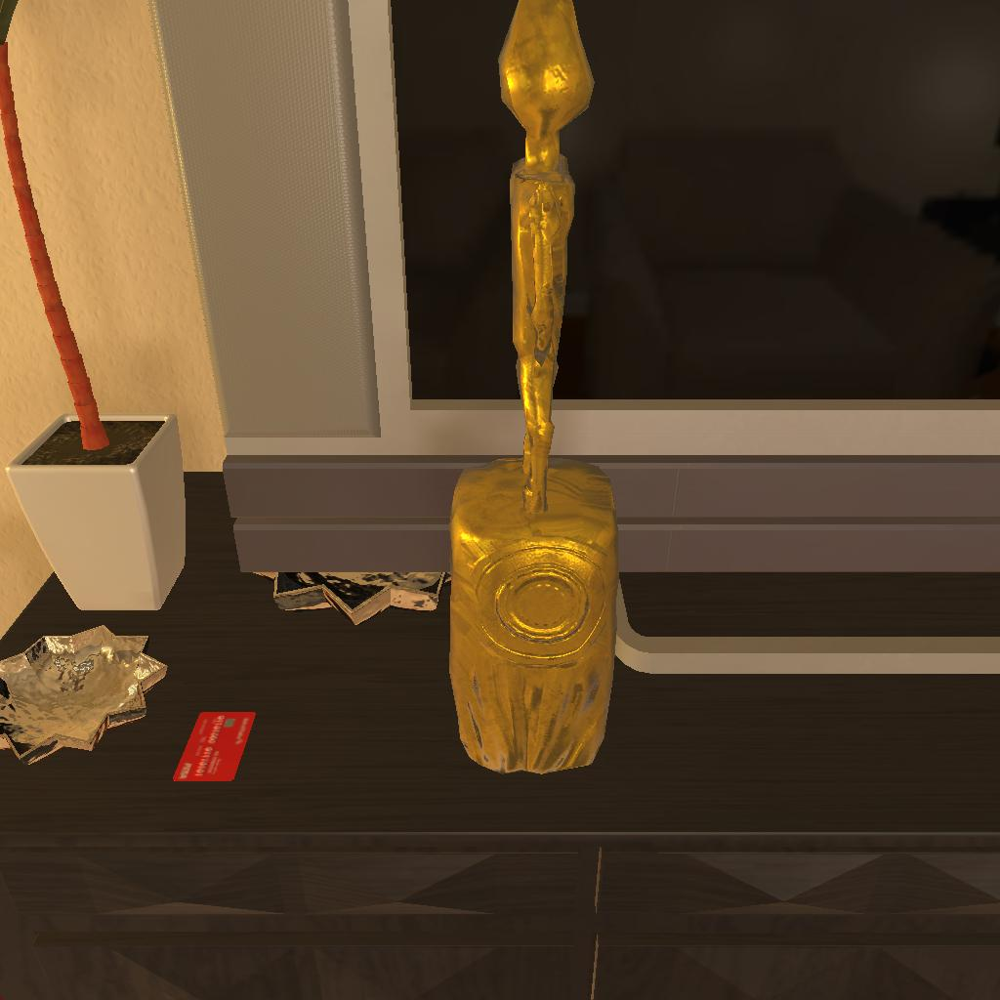

---------------------------------------------------------task: 7---------------------------------------------------------
--------------------------------------------------------------------------------------------------------------------------------------------------------------------
--------------------------------------------------------------------------------------------------------------------------------------------------------------------
Step:--------------------------------------------------------------------------3-------------------------------------------------------------------------------
----------------------------------------
VLM Prompt:
**Task**
Please perform as an embodied AI agent. Our final objective is to put a creditcard in coffeetable. Below is the plan for completing the task, the current observation, alongside historical data and admissible actions for the next step. Please determine the best action for the next step!
**Plan**
Below is a detailed step-by-step plan to complete the task.
1. Find a credit card.
2. Pick up the credit card.
3. Find a coffee table.
4. Place the picked-up credit card on the coffee table.
5. Find another credit card.
6. Pick up the second credit card.
7. Return to the previously located coffee table.
8. Place the second picked-up credit card on the coffee table next to the first one.
**Current Observation**
Displayed is an image capturing the current position of the agent.
**History Information**
Displayed are the previous observations with their corresponding actions.
State 0:
No history.
State 1:
1. Step Index in the Plan: 1
2. Objects: Credit Cards, Sofa
3. Action: go to sofa 1
State 2:
1. Step Index in the Plan: 2
2. Objects: Sofa, Credit Cards, Remote Controls
3. Action: go to coffeetable 1
State 3:
1. Step Index in the Plan: Unknown (aiming to pick up a credit card)
2. Objects: Coffee Table, Box, Remote Control
3. Action: go to drawer 1
**Admissible Actions**
(1): go to armchair 1
(2): go to armchair 2
(3): go to dresser 1
(4): go to garbagecan 1
(5): go to cabinet 1
(6): go to drawer 2
(7): go to cabinet 2
(8): go to drawer 3
(9): go to cabinet 3
(10): go to drawer 4
(11): go to cabinet 4
(12): go to sidetable 1
(13): go to sofa 1
(14): open drawer 1
(15): close drawer 1
**Analysis Guideline**
1. Analyze the history and current observation, and then determine our current step in the plan and our current place.
2. List all visible objects related to the task in the current observation, without summarizing any as "various items."
3. Analyze the objects in the current observation based on the history and the requirements for the current step, and then determine if we can complete the step with the current observation.
4. Analyze and decide on the most appropriate action to take.
5. Summarize the analysis using the following format: "Analysis: [The summarization of the analysis], The Most Appropriate Action: (i which is the integer.): [Selected action]"
**Notes**
1. We must complete each step of the plan in order and cannot skip steps when the previous ones are not finished.
2. For "Go to" actions listed as "go to xxx [n]", interpret this as there are n distinct actions available: "go to xxx 1", "go to xxx 2", ..., "go to xxx n". Select one specific action from these options instead of using "go to xxx [n]".
3. If receptacles such as drawers, cabinets, and so forth are closed in the current observation, we may try to open them.
4. Pay attention to synonyms and ensure clarity in the terms used.
5. We must determine and provide the single action which must be in the **Admissible Actions**.
6. If there is no history available, we are at the first step and the current place is "Unknown".
**Answer**
Please select the most suitable action by following the **Analysis Guideline**, keeping the above **Notes** in mind.
----------------------------------------
----------------------------------------
VLM Response:
Analysis: The current step in the plan appears to be step 2, which is to pick up the credit card. The current place seems to be near a golden statue or ornament on a base, with a credit card visible on the floor nearby. Visible objects related to the task in the current observation include a credit card on the floor. Based on the history and the requirements for the current step, we can complete the step with the current observation since the credit card we need to pick up is within sight. Therefore, the most appropriate action would be to pick up the credit card that is visible on the floor. Unfortunately, the admissible actions provided do not include an action for picking up the credit card. Since we must select an action from the admissible actions, we may have to choose an action that brings us closer to the credit card if available. However, none of the admissible actions seem to directly relate to the credit card either. Given this, the best course of action would be to take an action that seems most logical based on the current situation, which could be to open drawer 1 (action 14) as it might reveal more objects or tools that could be useful for picking up the credit card.
The Most Appropriate Action: (14): open drawer 1
----------------------------------------
----------------------------------------
>>> Refine VLM Response and Get Pure Action: open drawer 1
----------------------------------------
-----------------------------------------------------------------
Running time: 11.576685905456543 seconds
Total Money: 0
-----------------------------------------------------------------
-----------------------------------------------------------------
Summarization Prompt:
**Context**
Analysis: Since there is no history information, we are at the first step in the plan, which is to find a statue. The current place is unknown. In the current observation, we see a floorlamp next to an armchair with a small table that has a small object on it, which could potentially be the statue we are looking for. Since the plan requires us to find a statue first and it appears there might be one on the table next to the armchair, we should investigate this object to determine if it is the statue we need.
The Most Appropriate Action: (1): go to armchair 1
**Summary**
1. Step Index in the Plan: 1
2. Objects: Floorlamp, Armchair, Small Table, Small Object (potential statue)
3. Action: go to armchair 1
**Context**
Analysis: The current step in the plan appears to be step 2, which is to pick up the credit card. The current place seems to be near a golden statue or ornament on a base, with a credit card visible on the floor nearby. Visible objects related to the task in the current observation include a credit card on the floor. Based on the history and the requirements for the current step, we can complete the step with the current observation since the credit card we need to pick up is within sight. Therefore, the most appropriate action would be to pick up the credit card that is visible on the floor. Unfortunately, the admissible actions provided do not include an action for picking up the credit card. Since we must select an action from the admissible actions, we may have to choose an action that brings us closer to the credit card if available. However, none of the admissible actions seem to directly relate to the credit card either. Given this, the best course of action would be to take an action that seems most logical based on the current situation, which could be to open drawer 1 (action 14) as it might reveal more objects or tools that could be useful for picking up the credit card.
The Most Appropriate Action: (14): open drawer 1
Please summarize the context by following above examples when providing the summary, and ensure that only the summary is included, without any extra explanation.
**Summary**
-----------------------------------------------------------------
-----------------------------------------------------------------
Summarization Response:
2. Step Index in the Plan: 2
3. Objects: Golden Statue (or Ornament), Credit Card
4. Action: open drawer 1
-----------------------------------------------------------------
-----------------------------------------------------------------
Text Observation:You open the drawer 1. The drawer 1 is open. In it, you see a television 1, a statue 1, a houseplant 1, and a creditcard 1.
-----------------------------------------------------------------
UNSUCCEED